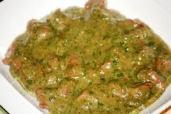

Adémé Liste des ingredients 600 grs de feuilles d'adéme 1.5cm de gingembre 2 gousses d'ail 3crabes 1 manquereau fumé 1 oignon 12 cl d'huile de palme 1 bouillon de cube 1 piment Du sel Du poivre
Sauce Arachide Liste des ingredients 1 kg de viande de boeuf 2 crabes De la pâte d'arachide 3 tomates fraîches 2 piments 1 oignon 1 cuillère à café de tomate pâte Des feuilles de dah cuites et écraseées (feuille d'oseille) Du sel 1 cube d'assaisonnement
Yassa au poulet Liste des ingredients 1/2 tasse de jus de citron fraîchement pressé 4 gros oignons émincés Du sel et poivre noir fraichement moulus 1/4 de tasse de feuilles de persil hachées 5 cuilléres à soupe d-huile d'arachide Du poulet frit, coupé en morceaux 1/2 tasse d'olive 3 cuillères à soupe de moutarde 1 cube d'assaisonnement
Sauce Aubergine Liste des ingredients 1 kg de viande de boeuf 1 gros poisson frais Une dizaine d'aubergines (vous pouvez zn trouver dans tous les magasins africains) 2 gousses tomates 2 piments 1 oignon 1 cuillère à soupe de concentré de tomate 3 cuillères a soupe d'huile d'arachide Du sel 1 cube d'assaisonnement
Saka-saka Liste des ingredients Des feuilles d'épinard De la sauce graine De la pâte d'arachide 1 gousse d'ail Des piments Des oignon Du cumin/li> De l'huile d'arachide De l eau Du citron
le garba Liste des ingredients Atchiéque Du poisson thon Des piments Des oignon Des tomates De l'huile
l'Arachide au gombo  Liste des ingredients 1 kg de viande de boeuf 2 poissons fumés 2 crabes De la pâte d'arachide 4 gombos frais 3 tomates fraîches 2 piments 1 oignon 1 cuillère à café de tomate pâte Des feuilles de dah cuites et écraseées (feuille d'oseille) Du sel 1 cube d'assaisonnement
Akpi au brochet fumé Liste des ingredients 4 poissons brochets fumés au feu de ois 4 grandes tomate fraîche 2 cuilleres a soupe de tomate concassée 8 piments rouges 1 gousse d'oignon Du poisson mange sec(fumé) des grains d'Akpi De l'adjovan 3 pincées de sel marin 1 cube d'assaisonnement
Kédjénou d'escargots Liste des ingredients 8 gros escargots africains 2 oignons 3 grosses tomates 10 piments 1 cuillerée a soupe de tomate concentrée 1 grand verre de vin rouge De sel 1 cube d'assaisonnement
pépé soupe Liste des ingredients 3 poissons moyens (Machoiron, Mérou ou capitaine) 2 petits pommes de terre 2 à 3 belles tomates Fraîches 2 poireaux 3 graines de pépé Du sel Du poivre 1 cube d'assaisonnement
Lambi Liste des ingredients 1 kg de viande 500 g de gombos frais De l'huile Du piment De l'oignon De la tomate concentrée De la tomate fraîche De la poudre de poisson sec Du sel 1 cube d'assaisonnement
Nandji Liste des ingredients 1 kg de viande 500 g de gombos frais De l'huile Du piment De l'oignon De la tomate concentrée De la tomate fraîche De la poudre de poisson sec Du sel 1 cube d'assaisonnement
Kokotcha Liste des ingredients 1,5 kg de viande ( boeuf, mouton, poulet) 1 bol de tomate concentrée 2 gros oignons 10 cl d'huile d'arachide 3 feuilles de laurier 1 piments Du poivre moulu 1 gousse d'ail 2 cubes de bouillon 4 carottes 1 petit chou blanc